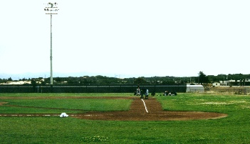

Chalking the Baselines

Photographed on the CSUMB baseball field, with an f-stop of 16, 400ASA film, and a 125 shutter speed on a Pentax P3 35mm camera.
My teammate, Tegrey Silva-doyle #21, chalks the first baseline in front of Santa Cruz while they stretch.